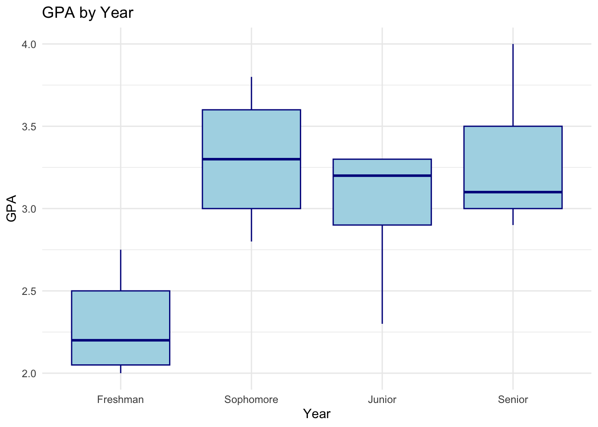
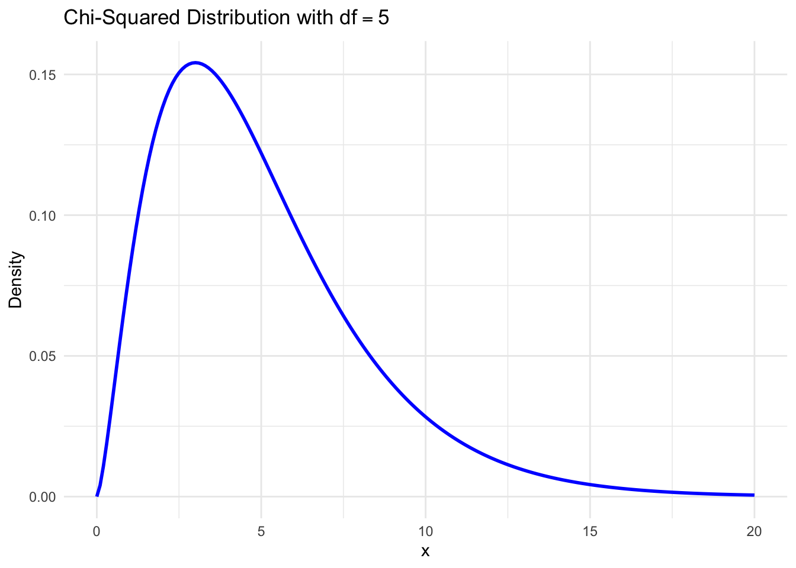
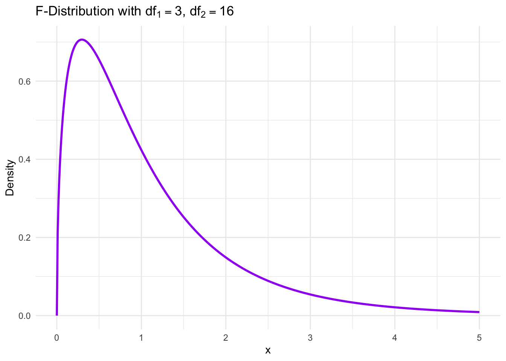
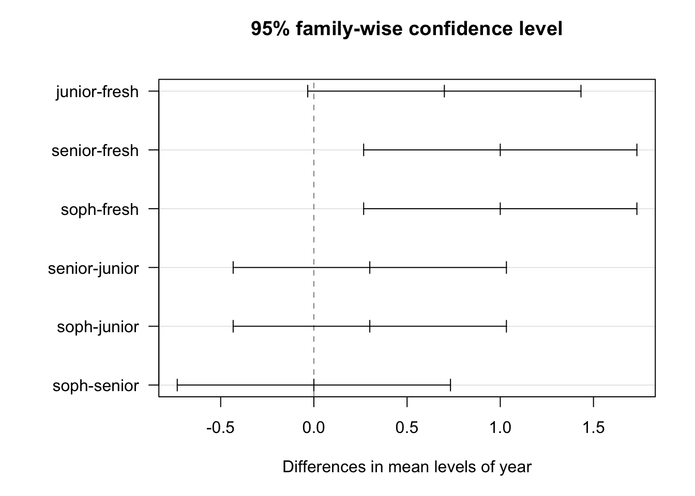
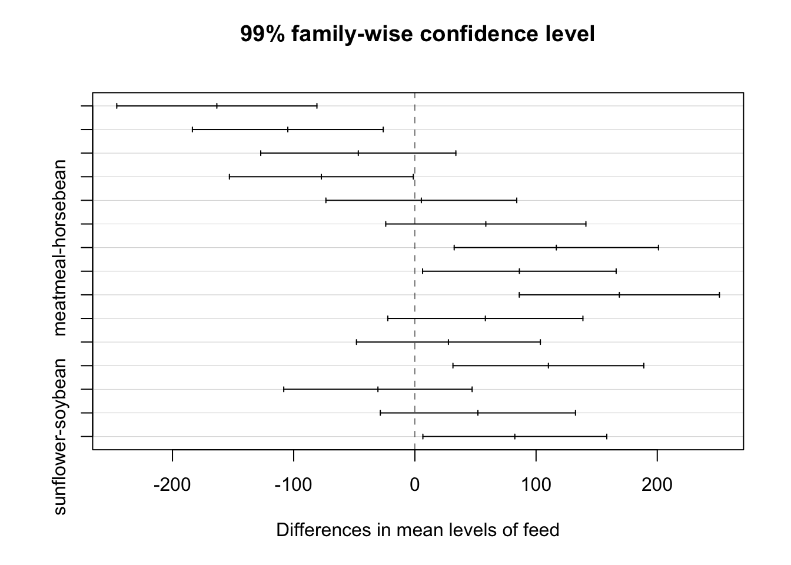

Chapter 10 Analysis of Variance (ANOVA)
In Chapter 9, we compared population means and proportions between two groups. Here, we extend this analysis to Analysis of Variance (ANOVA), a method for comparing the means across three or more populations. ANOVA helps us determine if observed differences among group means are statistically significant or due to chance, making it a valuable tool for analyzing differences across multiple groups in various fields.
10.1 Single-Factor ANOVA
Illustration of ANOVA
Motivation:
Q: Are the means the same in each population? Does \(\mu_1 = \mu_2 = \ldots = \mu_k\)?
A: Collect a sample from each population and use ANOVA to make the determination.
Our hypotheses will be the following:
\(H_0:\mu_1 = \mu_2 = \ldots = \mu_k\)
\(H_a:\text{ at least one } \mu_i \text{ differs}\)
Recall that a two-sample t-test will compare the means of two populations (or treatments).
ANOVA extends this to 3 or more populations (or treatments).
Example 10.1 Do the average GPAs (grade point averages) differ by class level at this university?
A small pilot study looked into this possibility by collecting GPAs from five randomly selected students from each of four levels (first-year through fourth-year).
| Year | Sample Size | Sample Mean | Sample Std Dev |
|---|---|---|---|
| Freshman | 5 | 2.3 | 0.318 |
| Sophomore | 5 | 3.3 | 0.412 |
| Junior | 5 | 3.0 | 0.424 |
| Senior | 5 | 3.3 | 0.453 |

Is there enough evidence to suggest that the average GPA is not the same for all four levels?
Our hypotheses for this example will be:
Definition 10.1 A factor is a characteristic that distinguishes between populations or treatments.
Definition 10.2 A level of a factor is one specific population or treatment within that factor.
Example 10.2 We want to test the average effectiveness of four different drugs in treating a specific condition.
Factor:
Levels:
Example 10.3 We want to compare the average growth of sunflowers for six growing conditions.
Factor:
Levels:
We will measure a quantitative response (Y) for a sample from each level of the factor. Often, ANOVA data come from a controlled experiment, where \(k\) represents the number of levels, treatments, or populations.
Notation:
\[N = n_1 + n_2 + \ldots + n_k\]
\[T = n_1 \bar{x}_1 + n_2 \bar{x}_2 + \ldots + n_k \bar{x}_2 \]
\[\bar{\bar{x}}= T/N\]
Definition 10.3 Sum of Squares (SS) quantifies two types of variation in data.
- Treatment Sum of Squares (SSTR) - measures the variability between groups.
How far apart are the sample means of the k populations?
\[SSTR = n_1(\bar{x}_1 - \bar{\bar{x}})^2 + n_2(\bar{x}_2 - \bar{\bar{x}})^2 + \ldots + n_k(\bar{x}_k - \bar{\bar{x}})^2\]
\[df_{TR} = k-1\]
- Error Sum of Squares (SSE) - measures the variability within the k populations.
How spread out are the individual populations?
\[SSE = (n_1-1)s_1^2 + (n_2-1)s_2^2 + \ldots (n_k-1)s_k^2\] \[df_{E} = N-k\]
- **Total Sum of Squares (SST)} - measures the total variability in the data, ignoring populations and treatments.
\[SST = SSTR + SSE = \sum (x-\bar{\bar{x}})^2\]
\[df_T = N-1\]
Example 10.4 Calculate SSTR, SSE, and SST (and the associated degrees of freedom) for GPA data set.
Mean Squares
Definition 10.4 In ANOVA, a mean square (MS) represents an average measure of variation. It is obtained by dividing a sum of squares (SS) by its associated degrees of freedom (df). Each mean square provides a way to quantify the average variability within or between groups, allowing us to make comparisons across different sources of variation in the data.
\[MSTR = \frac{SSTR}{k-1}\]
\[MSE = \frac{SSE}{N-k}\]
An ANOVA F-statistic can be calculated from the mean squares as follows:
\[F_{test} = \frac{MSTR}{MSE}, df_1 = k, df_2 = N-k\]
Some notes:
Under the null hypothesis \(H_0\) (\(\mu_1 = \mu_2 = \ldots \mu_k\)), \(MSTR \approx MSE\).
If all population means are equal, \(F_{test} \approx 1\).
If one or more of the populatino means are not equal, \(F_{test} >> 1\).
\(F_{test}\) follows an F-distribution with parameters \(df_1 = k\), \(df_2 = N-k\)
Example 10.5 Calculate MSTR, MSE, \(F_{test}\), and the p-value for the GPA data set.
ANOVA Assumptions
ANOVA assumes that population or treatment distributions are normal and have equal variances. While these assumptions can be checked in R, we will generally assume they hold for the examples analyzed here.
\(\chi^2\) distribution

F distribution

One Way ANOVA F-test
Step 1: State the hypotheses.
Step 2: State the level of significance.
Step 3: Calculate the test statistic.
Step 4: Calculate the p-value and plot.
Step 5: Make a statistical decision.
Step 6: Interpret your decision in the context of the problem.
ANOVA table
An ANOVA table summarizes the sources of variability in data by dividing it into “between-group” and “within-group” components. It includes values for sum of squares (SS), degrees of freedom (df), mean square (MS), F-statistic, and p-value.
Using R to complete ANOVA
Since many of these calculations can be tedious to calculate, a statistical program like R can be used to complete the analysis.
# GPA data set
fresh.gpa = c(2.05, 2.20, 2.00, 2.50, 2.75)
soph.gpa = c(3.00, 2.80, 3.80, 3.60, 3.30)
junior.gpa = c(3.30, 3.20, 2.30, 2.90, 3.30)
senior.gpa = c(3.50, 3.10, 2.90, 3.00, 4.00)
# Make one list of all GPAs
gpa = c(fresh.gpa,soph.gpa,junior.gpa,senior.gpa)
# Create labels
year = c(rep("fresh",5),rep("soph",5),rep("junior",5),rep("senior",5))
# calculate ANOVA
fit = aov(gpa~year)
summary(fit)## Df Sum Sq Mean Sq F value Pr(>F)
## year 3 3.338 1.1125 6.781 0.00367 **
## Residuals 16 2.625 0.1641
## ---
## Signif. codes: 0 '***' 0.001 '**' 0.01 '*' 0.05 '.' 0.1 ' ' 1Example 10.6 Using the R output from the previous page, complete a six-step hypothesis test to whether the mean GPAs at the four college levels are the same at \(\alpha=0.05\).
10.2 Multiple Comparison in ANOVA
Suppose that we conclude that the means of the k populations are not all equal. Which populations means do differ?
Q: Can we just do two-sample t-tests for all pairs of populations?
A: Yes and no. We need to make an adjustment for simultaneously completing a group of tests.
Example 10.7 In the GPA example, we had four populations. Suppose the null hypothesis is true (\(\mu_1 = \mu_2 = \mu_3 = \mu_4\)) and \(\alpha=0.05\).
Tukey’s Procedure
Tukey’s Procedure (Tukey’s Honest Significant Difference or Tukey HSD) is a multiple comparisons procedure to account for completing a number of simultaneous tests.
Confidence intervals for the difference in means (\(\mu_i - \mu_j\)) can be computed using Tukey’s Procedure. These calculations utilize another continuous distribution, the studentized range distribution (Q).
While these calculations can be completed by hand, we’ll focus on calculating them in R.
Example 10.8 Returning to the GPA data set, determine which population means differ at \(\alpha=0.05\) using a Tukey adjustment.
## Tukey multiple comparisons of means
## 95% family-wise confidence level
##
## Fit: aov(formula = gpa ~ year)
##
## $year
## diff lwr upr p adj
## junior-fresh 0.7 -0.03291823 1.4329182 0.0638299
## senior-fresh 1.0 0.26708177 1.7329182 0.0062342
## soph-fresh 1.0 0.26708177 1.7329182 0.0062342
## senior-junior 0.3 -0.43291823 1.0329182 0.6527735
## soph-junior 0.3 -0.43291823 1.0329182 0.6527735
## soph-senior 0.0 -0.73291823 0.7329182 1.0000000
10.3 R Companion for Chapter 10
Example 10.9 This example uses the dataset again. This dataset include 71 observations of the growth rate of chickens using a variety of feed supplements. The boxplot is produced again below.

Using the theory from Chapter 10, we are ready to test if there is evidence of a difference in mean weights of chicks for the six types of feed. Our ANOVA F-test hypotheses will be:\ \(H_0: \mu_1 = \mu_2 = \mu_3 = \mu_4 = \mu_5 = \mu_6\) vs. $H_a: $ at least one \(\mu_i\) differs (\(i=1,2,3,4,5,6\)).\
Let’s run this F-test at \(\alpha = 0.01\).
## Df Sum Sq Mean Sq F value Pr(>F)
## feed 5 231129 46226 15.37 5.94e-10 ***
## Residuals 65 195556 3009
## ---
## Signif. codes: 0 '***' 0.001 '**' 0.01 '*' 0.05 '.' 0.1 ' ' 1The resulting F-test statistic is \(F_{test} = 15.37\) (\(df_1 = 5, df_2 = 65\)) and a p-value of \(5.94 \cdot 10^{-10}\). At a significance level of \(\alpha = 0.01\), we would reject \(H_0\) and conclude that at least one of the true mean weights differs by diet.
Which \(\mu_i\) differ? We can answer this by running all pairwise comparisons of \(\mu_i\) and \(\mu_j\) (\(i \neq j\)) and making a multiple comparisons adjustment. Let’s use a family-wise error rate of \(\alpha = 0.01\).
## Tukey multiple comparisons of means
## 99% family-wise confidence level
##
## Fit: aov(formula = weight ~ feed, data = chickwts)
##
## $feed
## diff lwr upr p adj
## horsebean-casein -163.383333 -245.964363 -80.802304 0.0000000
## linseed-casein -104.833333 -183.571256 -26.095411 0.0002100
## meatmeal-casein -46.674242 -127.181777 33.833292 0.3324584
## soybean-casein -77.154762 -153.028522 -1.281001 0.0083653
## sunflower-casein 5.333333 -73.404589 84.071256 0.9998902
## linseed-horsebean 58.550000 -24.031030 141.131030 0.1413329
## meatmeal-horsebean 116.709091 32.439113 200.979069 0.0001062
## soybean-horsebean 86.228571 6.373743 166.083400 0.0042167
## sunflower-horsebean 168.716667 86.135637 251.297696 0.0000000
## meatmeal-linseed 58.159091 -22.348444 138.666626 0.1276965
## soybean-linseed 27.678571 -48.195189 103.552332 0.7932853
## sunflower-linseed 110.166667 31.428744 188.904589 0.0000884
## soybean-meatmeal -30.480519 -108.189144 47.228105 0.7391356
## sunflower-meatmeal 52.007576 -28.499959 132.515111 0.2206962
## sunflower-soybean 82.488095 6.614335 158.361856 0.0038845There are several statistically significant differences in mean chick weights at \(\alpha=0.01\).
Casein differs from horsebean, linseed, and soybean.
Horsebean differs from casein, meatmeal, soybean, and sunflower.
Linseed differs from casein and sunflower.
Meatmeal differs from horsebean.
Sunflower differs from horsebean, linseed, and soybean.
Soybean differs from sunflower, horsebean, and casein.
